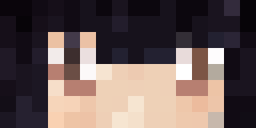
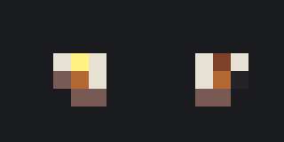
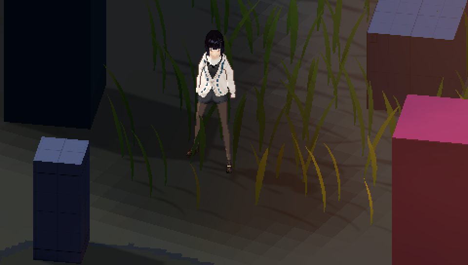

eye73-20261101T071040550Z-a7d96049 / frame94 / serial1 / 정상 Play1회. 제품 눈 보정은 적용하지 않았습니다.
정지 데이터 연결 검증이며 눈 디자인·회전·blink·시간 안정성의 성공 결과가 아닙니다.


| stableId | 양의 source 홍채 후보 셀 | 면적(셀) | CPU allocator 선택(top-left) | 실제 GPU 홍채 |
|---|---|---|---|---|
| 2 | 6 | 2.3759196 | [[216, 53], [216, 52]] | [[216, 53], [216, 52]] |
| 1 | 5 | 2.1628428 | [[224, 53], [224, 52]] | [[224, 53], [224, 52]] |
현재 allocator의 면적 반올림·순위를 그대로 재현한 결과입니다. 두 눈 모두2셀인 것은 새 고정 크기 보정이 아닙니다. records RGB와 최종 head ROI의 최대 선형 오차0.

정상 Edit 복귀. background/Play옵션/pause/time/pipeline/globals 동일, 기존 dirty29개 내용과 전체 PlayerSettings 직렬화 동일. 비dirty AssetImporter 객체1개 조회 불가를 남겼습니다. RT30→437→30. 내부 allocated +33.2156MiB는 physical RAM이나 누수 판정이 아닙니다.
데이터를 이동·삭제·덮어쓰지 않습니다. 데이터 해시·크기·헤더·행을 검증한 완료 marker와 전체 검증 marker가 필요합니다. 실패/취소/프레임 변경을 포함한 오프라인13검사와 전체 외부 동적 컴파일 통과. 원본 TemplateRGBA bank 미수집, 각 subsample의 가림 결정 미수집, 과거100/101반례 미재현입니다.
실제 수치·좌표 / 복원 검증 / 128셀 records와 두 눈 counts / 프로토콜 검사 / 설치 승인 소스 근거